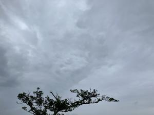

うるがいの話 ある日
最新: 音色がいい【うるがいの話 ある日】とは 一日だけのプログです
『うるがいの話』の最新一日だけのプログで、通信料が少なく経済的だ。カニの画像をクリックすると全ての日付が載る『うるがいの話』サイトを表示します
|
|
【うるがいの話】 うるがい(ｳﾙｶﾞｲ urugai)とは、『もずくがに』の名前でとても大きくなります。 |
|---|---|
|
|
【カミマヤーの話】 猫のことを方言でマヤーといいます。カミマヤー（kamimayaa）とは、神の猫のことです。 |
|
【たながぁの音楽】 たながぁ（ﾀﾅｶﾞｰ tanagaa）とは手長えびのことで、何種類かあり大きいのは車 エビぐらいになります。 |

|
【ぶながぁの話】 ぶながぁ(ﾌﾞﾅｶﾞｰ bunagaa)とは、赤い髪の毛、赤い身体、そして身長は１ｍ２０ｃｍ ぐらい、川の蟹を食べているの目撃された。場所は沖縄県国頭郡大宜味村のと ある村僕の隣近所に住んでいる爺さんから、聞いた話です。 |
|
|
【ギーマの話】 ギーマ(giima)とは、山原の里山に咲くスズランに似た、 花を付けます。実は食べられます、 気が付くと口の周りが紫になっています。 |
2025年03月15日 (土）音色がいい
16:23

久しぶりにキャプチャーしたユーチューブ動画とギターでコラボす
る。その筋の人が作成したユーチューブ動画のギターの音色が、い
いのです。こちらも生のギターの音だし、マ、当たり前かと。その
あと、次のユーチューブ動画のネタの楽譜データをプレイしながら
同じように、ギターでコラボしていたら、楽譜のギターコードが画
面から消えてしまった。ケッと、止めた。楽譜ソフトの障害なので
しかたないか・・・・。フト、人気がない新しいバージョンではも
しかしたら、改善されているかもと、演奏した。
お！！、音色がいい。フム､なぜ今まで気がつかなかったのか、そも
そも、なぜ音がいいのか。サウンドフォントが、違うのか調べてみ
た。従来のを継承していた、ホホー、そもそものアプリがいいのか
と分かった。さて、新しいバージョンは操作が大幅に変わりすぎて
使いずらい。作成は、これまでとおり旧バージョンを利用し、ユー
チューブ動画の収録のとき、新バージョンを使うことにする。
ということは、新旧混在させ、旧バージョンを主とするのだがこれ
の設定がなかななか、大変なのですよ。詳しく書いてもネ、おしま
い。おっと、楽譜のギターコードが画面から消える現象は最新でも
改善されていなかった。有料版だとそういうことはないだろうが。

まだ、半袖である。明日から、寒くなる予定、シークヮーサーの花
は順調に開花している。